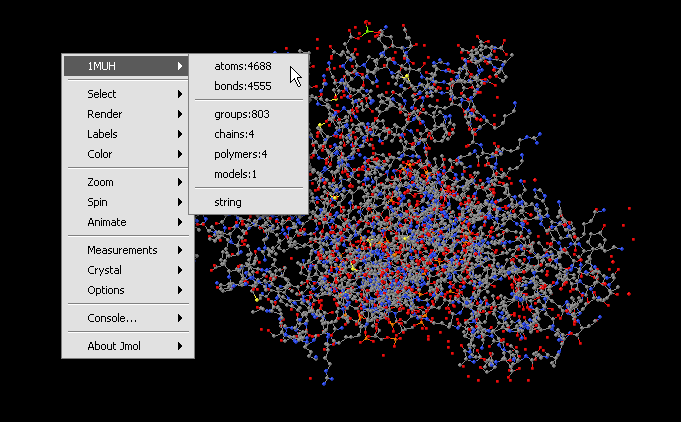

JMOL supports viewing 3D molecular structures. geWorkbench supports loading PDB format files. A full description of the capabilities and functionality of JMOL can be found at (http://jmol.sourceforge.net/ )
1. Load a PDB file into a Project folder.
2. Navigate to the JMOL image viewer.
3. Right click on the image to interact with the display of the molecular structure. For details on the display options included, JMOL documention can be found at http://jmol.sourceforge.net/.
